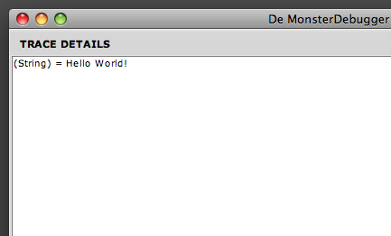
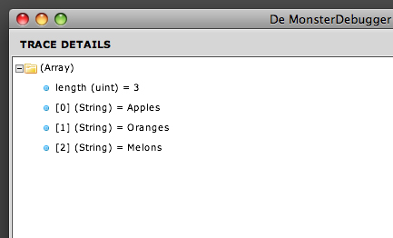

The trace function of De MonsterDebugger can be used to display standard objects like Strings, Numbers, Arrays, etc.
But it can also be used to display more complex objects like custom classes, XML or an Array containing Objects with XML nodes for that matter.
It will send a snapshot of those objects to the desktop application where you can browse through them.
Trace a String:
MonsterDebugger.trace(this, "Hello World!");

Trace an Array:
var foo:Array = ["Apples", "Oranges", "Melons"];
MonsterDebugger.trace(this, foo);

Trace an Object:
var person:Object = {name:"Mike", age:25, gender:"Male"};
MonsterDebugger.trace(this, person);